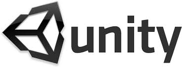
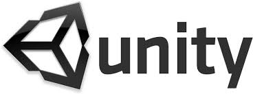

BIENVENIDO A THE HIPSTER CHRONICLES
Te encuentras ante el juego de plataformas más inconformista y peculiar que posiblemente encuentres en la red.
En él, controlarás a un Hipster cuyo objetivo será recuperar sus pertenencias hipsteras. Para ello deberá superar trepidantes niveles en los que sorteará numerosos obstáculos y algún que otro pijo. Esperamos que te diviertas
En este juego de plataformas de pantalla desplazable se medirán tus reflejos y rapidez en cada uno de los niveles que tiene.
Encontrarás numerosos obstáculos como ordenadores y cajas que deberás sortear para no ser atrapado por la cámara. Nuestro Hipster dispondrá
de 3 vidas que perderá al colisionar con trampas y enemigos, pero tranquilo dispondrás de un dispositivo que dispara distintos objetos (hipsters) a tus enemigos para defenderte de ellos.
Controles:
Para manejar a nuestro Hipster usaras:
A -> Desplazamiento hacia la derecha
D -> Desplazamiento hacia la izquierda
S -> Agacharse
Barra espaciadora -> Saltar
Para será necesario el uso del ratón y clic en el botón izquierdo para disparar.
Somos alumnos de Grado en Informática de la Universidad de Granada que hemos desarrollado este proyecto el cual nos ha ayudado a tener un primer contacto con este tipo de entornos gráficos
y en el aprendizaje en el desarrollo ágil.
Un saludo y esperamos que disfrutéis de nuestra parte:
Alberto Casares
Daniel Díaz
Miguel Ángel Hernández
Jahiel Jerónimo
Juan Antonio Porcel
Comenzamos la primera iteración un mes antes de las vacaciones de navidad, en esta iteración las
funciones que repartimos entre los miembros del grupo eran bastante básicas y simples, aunque
no todos teníamos experiencias utilizando el entorno de desarrollo Unity, no tuvimos muchos problemas y
realizamos las tareas antes de tiempo.
Por ello pensamos que el esfuerzo que habíamos estimado era incorrecto.
Definimos que 1 PH eran 2 horas de trabajo, la media real fue 1 PH era de 30 minutos a 1 hora.
En definitiva para el primer Sprint todo lo planeado fue hecho con tiempo suficiente, el error que
tuvimos fue que había documentos que no sabíamos que teníamos que hacer, pero de haber
sabido que debíamos hacerlos hubiésemos dispuesto de tiempo mas que suficiente para
realizarlos.
En esta iteración implementamos el movimiento de la cámara, los movimientos del personaje, obtaculos, trampas, las vidas, menu de pausa y principal.
La segunda iteración en el desarrollo de nuestro videojuego, tuvo varios contratiempos, entre ellos las vacaciones de navidad, que supuso la separación del grupo durante este
tiempo. También hubo problemas con las herramientas de comunicación por falta de experiencia por parte de algunos miembros del grupo, sin embargo se consiguió terminar a tiempo.
Para esta iteración se desarrollo: Varios enemigos, disparos tanto de enemigos como del personaje principal, nuevos obstáculos, animaciones y un menú de selección de niveles.
En esta tercera iteración desarrollada durante el mes de Enero, cada miembro del grupo hemos diseñado un nivel, haciendo uso de los elementos creados en las iteraciones anteriores
cada miembro del grupo los ha ido dispersando en distintos mapas, de forma que sean posibles sortearlos, creando así niveles de diferentes dificultades, divertidos y entretenidos.
En esta iteración no han surgido tantos problemas como en la ultima ya que tenemos mas experiencia a la hora de manejarnos en estos entornos.
Esperamos que disfrutes de estos niveles.


 
